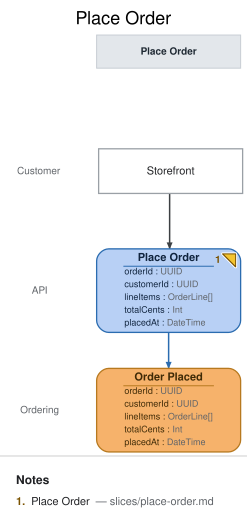

Place Order
State Change · implemented
{kind=link}
| Kind | Name | Detail |
|---|---|---|
| ui | Storefront | @Customer |
| command | Place Order | { orderId: UUID, customerId: UUID, lineItems: OrderLine[], totalCents: Int, placedAt: DateTime } |
| event | Order Placed | @Ordering · { orderId: UUID, customerId: UUID, lineItems: OrderLine[], totalCents: Int, placedAt: DateTime } |
Slice: Place Order

Intent
A customer turns their cart into a firm order. This is the deep-dive slice for the Meridian
Goods walkthrough: it anchors the demo's idempotency story (client-generated orderId) and its
money-handling story (integer cents, total derived from line items) — see
domain-decisions.md.
Trigger & Actor
The Customer, from the Storefront screen, submits their cart at checkout. Each submit
issues exactly one Place Order command; a retried submit (double-click, client timeout, network
retry) reuses the same client-generated orderId rather than minting a new one — that reuse is
what makes idempotent placement (INV-PO-1) meaningful.
Command / Input
Command: Place Order
| Field | Type | Required | Rules / Validation |
|---|---|---|---|
| orderId | UUID | yes | Client-generated (not server-assigned). Doubles as the idempotency key — see INV-PO-1 and domain-decisions.md. |
| customerId | UUID | yes | Identifies the customer placing the order. Customer existence/auth is enforced upstream of this slice (out of scope here). |
| lineItems | OrderLine[] | yes | At least one entry (INV-PO-3). Each OrderLine: sku (string, required, identifies the product), quantity (int, must be > 0 — INV-PO-4), priceCents (int, unit price snapshotted at order time, >= 0). |
| totalCents | Int | yes | Must equal Σ (priceCents × quantity) across lineItems — INV-PO-2. The server recomputes and verifies this; it never trusts a client-supplied total blindly. |
| placedAt | DateTime | no | Modeling note, not a real request field: this is the server clock's timestamp at command-handling time, not something the client sends. It appears on the command element here only so the DSL's event-field/command-field completeness check (em validate, fields-completeness/event-field-no-source) can trace Order Placed.placedAt to a same-slice origin — the tool has no separate "system-assigned at handling time" field category. The actual API request body excludes it. See Open Questions for the judgment call this represents. |
Trigger
Triggered by: screen Storefront @Customer
Event(s) Emitted
Event: Order Placed → context Ordering
Read by: Payments To Request view (next slice, feeds the payment-request automation), Open Orders view (this branch's slices/open-orders.md), Order Status view (slices/order-status.md)
| Field | Type | Immutable Fact? | Source / Notes |
|---|---|---|---|
| orderId | UUID | yes | Copied from the command; the order's identity for the rest of its lifecycle. |
| customerId | UUID | yes | Copied from the command. |
| lineItems | OrderLine[] | yes | Copied from the command — a snapshot of what was ordered and at what price, immune to later catalog/price changes. |
| totalCents | Int | yes | Copied from the command, after the server has verified it equals Σ line items (INV-PO-2). |
| placedAt | DateTime | yes | Server clock at the moment the event is recorded — the actual, meaningful origin of this field (see the Command/Input note above on why it's echoed there too). |
Invariants / Business Rules
- INV-PO-1: Placement is idempotent by client-supplied
orderId. APlace Ordercommand whoseorderIdalready has a recordedOrder Placedevent is not a new order: if the resubmitted payload is identical, the command is a no-op that returns the original result without appending a second event; if the payload differs, the command is rejected as a conflict (the sameorderIdcan never back two different orders). - INV-PO-2:
totalCentsmust equal Σ (priceCents×quantity) over alllineItems. The server computes this itself and rejects a command whose suppliedtotalCentsdisagrees — the client's total is never taken on faith. - INV-PO-3: An order must contain at least one line item. A
lineItemsarray with zero entries is rejected — there is no such thing as an empty order. - INV-PO-4: Every line item's
quantitymust be a positive integer. Zero, negative, or fractional quantities are rejected line-item-by-line-item (the whole command fails; no partial order is created).
Scenarios (Given / When / Then)
- Happy path — Given a customer with a non-empty cart of 2 line items whose prices and
quantities sum correctly, When they submit
Place Orderwith a freshorderId, ThenOrder Placedis recorded with the submittedorderId,customerId,lineItems,totalCents, and a server-assignedplacedAt; the order becomes visible onOpen OrdersandOrder Status. - Rejected — total mismatch (INV-PO-2) — Given a cart of 2 line items whose true sum is
4200 cents, When
Place Orderis submitted withtotalCents: 4000, Then the command is rejected with a total-mismatch reason and noOrder Placedevent is recorded. - Rejected — empty order (INV-PO-3) — Given a cart with zero line items, When
Place Orderis submitted, Then the command is rejected as an empty order and no event is recorded. - Rejected — invalid quantity (INV-PO-4) — Given a cart containing one line item with
quantity: -1(or0), WhenPlace Orderis submitted, Then the command is rejected citing the offending line item and no event is recorded. - Duplicate-
orderIdretry (INV-PO-1) — Given anOrder Placedevent already recorded fororderId: Xfrom an earlier successful submit, When the customer's client retriesPlace Orderwith the sameorderId: Xand the identical payload (e.g. after a timed-out response), Then no secondOrder Placedevent is recorded and the command returns the original order's result — the customer is never double-charged or double-fulfilled from a retried click. - Conflicting duplicate
orderId(INV-PO-1) — Given anOrder Placedevent already recorded fororderId: X, When aPlace Ordercommand arrives reusingorderId: Xbut with differentlineItems/totalCents, Then the command is rejected as a conflict and no second event is recorded — a reusedorderIdnever silently mutates or replaces the original order.
Alternate & Error Flows
- Idempotent retry: see INV-PO-1 and its two scenarios above — same-payload replay is a silent no-op; different-payload replay is a rejected conflict. This is the mechanism that lets the client safely retry on any ambiguous outcome (timeout, dropped connection) without a reconciliation step.
- Validation failures (INV-PO-2/3/4) never partially apply. The command either fully
succeeds (one
Order Placedevent, fully formed) or fully fails (no event at all); there is no partially-recorded order. - Downstream failure isolation: a failure in the automation that requests payment
(
Request Payment, the next slice) never rolls backOrder Placed— the order is already a recorded fact once its event is written. Payment failure is handled entirely in that later slice's own error flow.
Non-Functional Requirements
- Security / authz: the Customer must be authenticated and may only place an order for their
own
customerId(enforced upstream of this slice). - PII & compliance:
customerIdlinks to personal data held elsewhere; no PII is stored directly in this event's payload beyond that reference. - Performance / SLA: none beyond ordinary interactive request latency — no special SLA for this demo.
Dependencies & Read Models Affected
- Upstream events this slice relies on: none — this is the originating write for an order.
- Downstream read models / slices affected:
Payments To Request(feeds the payment automation),Open Orders(staff fulfillment view),Order Status(customer-facing view) — all three projectOrder Placed.
Open Questions
- Should
placedAtbe a real client-supplied field, or server-assigned? Resolved: server-assigned at command-handling time. It's listed on thePlace Ordercommand element in the.emmodel purely soem validate's field-flow completeness check can trace it — the Command/Input table above documents that this is a modeling artifact, not a real request field. See the findings file (w2a-ordering-docs.md) for the fuller judgment call. - What happens on a duplicate
orderIdwith a different payload? Resolved: rejected as a conflict, never silently applied and never treated as a second order — see INV-PO-1 and its "Conflicting duplicateorderId" scenario.